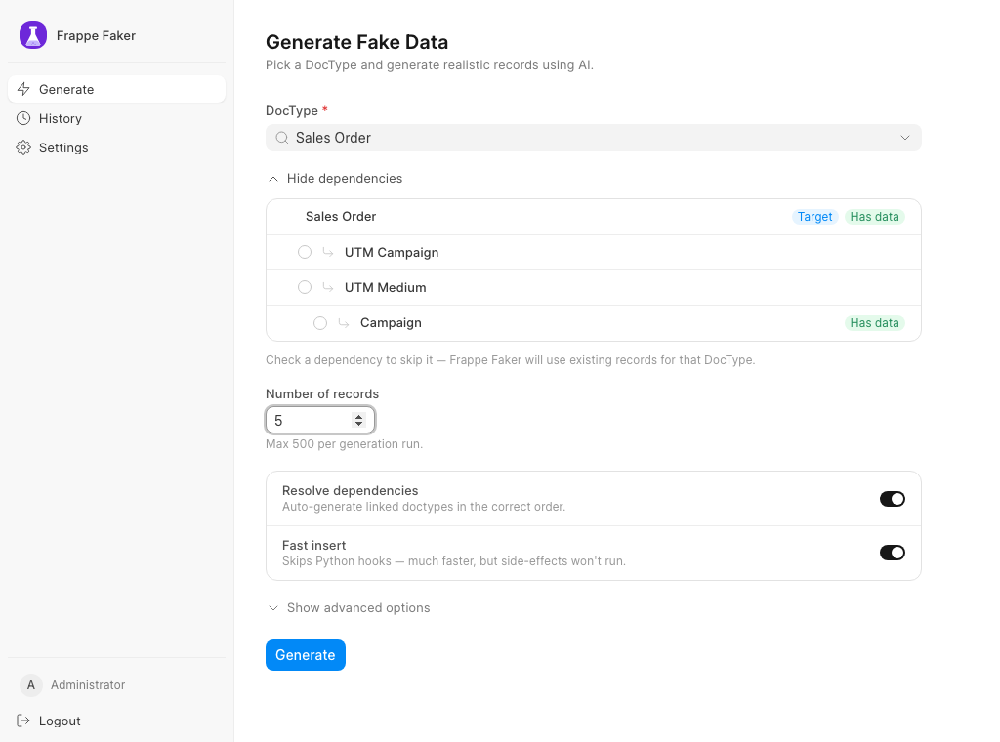

Realistic test data for any Frappe DocType
Pick a DocType, say how many records you want, and Frappe Faker asks the LLM of your choice for realistic rows that respect its fields, Select options and Link targets, inserts them in dependency order, and lets you roll the whole batch back when you are done.

What it does
- Reads the DocType's schema, including child tables, and builds a dependency graph of its Link fields.
- Generates records with OpenAI, Anthropic, Gemini, a local Ollama, or any OpenAI-compatible endpoint.
- Links new records to records that already exist on your site.
- Records every insert in a batch, so one click (or
bench faker cleanup) removes it all. - Works from the
/fakerweb UI or from the command line.
Get started
bench get-app https://github.com/wreckage0907/frappe_faker --branch develop
bench --site mysite install-app frappe_faker
Then open Faker Settings, choose a provider, and visit /faker.
The full guide is in the README.
Frappe Faker is for test, demo and development sites. It writes real records into the site you run it on.
Your data
Generating records sends the DocType's schema and the names of some existing linked records to the LLM provider you configure. Nothing is sent to us. The privacy policy lists exactly what is transmitted.